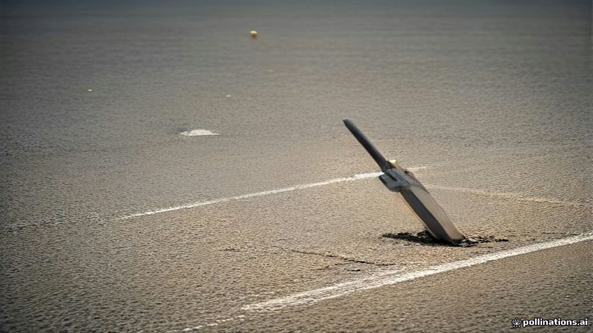

The stadium lights glared, a stark contrast to the humid Chennai evening of the late 1980s. A teenage prodigy, barely out of school, walked out to bat, his stance already brimming with an audacious confidence. As he adjusted his grip, the camera zoomed in, and there it was: three bold, blood-red letters – MRF – emblazoned on the willow. This wasn't a sporting goods brand, but the logo of a tyre manufacturer. To the uninitiated, it might have seemed odd, a curious anomaly. But for millions of Indians, this sight, on Sachin Tendulkar's bat, would become an indelible image, forging an unbreakable bond between a tyre company and the nation's beloved sport, without MRF ever crafting a single piece of cricket equipment.
The World Before
Before the 1980s, the landscape of Indian sports was largely uncommercialized, a realm of amateur pursuits often reliant on government funding. Cricket, while deeply popular, hadn't yet fully tapped into its vast commercial potential. The pivotal 1983 Cricket World Cup victory by India began to stir interest, but the idea of major corporate sponsorships, particularly for individual players or on their equipment, remained largely uncharted territory. Bat sponsorships, if they existed, were almost exclusively the domain of traditional cricketing gear manufacturers like Slazenger, Gunn & Moore, or Gray-Nicolls. A non-endemic brand — a company that didn't sell cricket bats — sponsoring a player's bat was practically unheard of.
Meanwhile, MRF, or Madras Rubber Factory, established in 1946, was a well-respected name in the rubber industry, initially manufacturing toy balloons before expanding into tyres. Tyres, by their very nature, are a "grudge purchase." Nobody dreams of buying new tyres; they are a necessity, a functional component of a vehicle. The challenge for MRF was to inject emotion, reliability, and aspiration into a product that lacked inherent glamour. The question was, how do you make a tyre brand resonate with millions, making it a household name that evokes trust and performance, beyond the mundane act of replacement?
The Crack
MRF's foray into sports marketing began in the 1980s, but it was their strategic pivot in the early 1990s that truly changed the game. They made a bold, visionary decision: to invest in cricket, India's undisputed obsession, by sponsoring its brightest young star, Sachin Tendulkar. While the exact start date varies across reports, Tendulkar's association with the MRF logo on his bat became iconic from his early career.
This wasn't just another sponsorship; it was a masterstroke of influencer marketing before the term even existed. MRF recognized Tendulkar's prodigious talent and immense potential to become the face of Indian cricket. The strategy was disarmingly simple, yet profoundly effective: place the distinctive red MRF logo, featuring its "Muscleman" mascot, prominently on Tendulkar's bat.
Every time Tendulkar unleashed a blistering cover drive, every time he raised his bat to acknowledge a century, every time the television cameras zoomed in on his focused expression, the MRF logo was front and center, visible to millions of captivated viewers across the subcontinent and beyond. Tendulkar, known for his powerful stroke play and the heavy bats he wielded, created a perfect visual synergy. The "Master Blaster's" raw power and consistent performance on the field subtly but effectively transferred attributes like durability, strength, and high performance directly to the MRF brand.
Crucially, MRF did not manufacture cricket bats themselves. The actual bats were crafted by other sporting goods companies like SG and SS, which then bore the MRF sticker. This distinction often blurred in the public consciousness, with many Indians mistakenly believing that MRF was a cricket bat manufacturer, a testament to the sheer power of the association.
The partnership with Sachin Tendulkar spanned over a decade, from the mid-1990s until around 2009. During this period, MRF cemented its position in the cricketing world, establishing a reputation not just as a sponsor, but as a discerning "talent spotter." After Tendulkar, MRF continued this strategic approach, associating with other cricketing legends and future stars, including West Indian maestro Brian Lara, Australian captain Steve Waugh, and later, Indian stalwarts like Virat Kohli (whose association began around 2014 and saw a staggering ₹100 crore renewal in 2017) and the promising Shubman Gill, signed in 2025. This consistent, long-term investment in cricketing icons fostered an unparalleled emotional connection with consumers, making MRF synonymous with cricketing excellence and, by extension, dependable performance.
What Happened Next
The impact of MRF's audacious strategy was transformative. The red logo on Sachin's bat propelled a tyre manufacturer into the national consciousness, making it a household name. This visibility translated directly into significant brand equity and market leadership. Today, MRF stands as India's largest tyre manufacturer by revenue and market share, holding a substantial presence across all vehicle segments. In the fiscal year 2022, MRF commanded approximately 29-30% of the total estimated industry production and a 25% revenue market share, solidifying its dominant position.
The company's brand image is exceptionally strong, supported by an extensive pan-India distribution network of over 5,000 dealers, particularly robust in the profitable replacement market, which contributed around 73% of its total revenue in FY22.
Remarkably, MRF achieves this market dominance with a relatively modest advertising expenditure. While the initial prompt cited 0.5% of revenue, recent reports indicate that MRF projected its advertising spend for FY25 at 0.7% of sales, amounting to ₹190 crore. This is a strikingly low percentage compared to many consumer brands, underscoring the efficiency and lasting power of its cricket-driven marketing.
The long-term value generated is evident in various metrics. Brand Finance's "Tyres 25 – 2026" report recognized MRF as the third strongest tyre brand globally, with a Brand Strength Index (BSI) score of 87.7 out of 100. It was also lauded as India's most valuable and strongest tyre brand. Financially, the company has seen consistent growth. Its revenue for the fiscal year ending March 2026 was ₹31,160 crore (311.6 billion), peaking at ₹31,900 crore (319 billion) in June 2026. For investors who spotted the trend early, the returns have been staggering: an MRF share, priced at ₹325 when Sachin Tendulkar debuted in 1989, soared to ₹1,00,000 (₹1 lakh) by 2023, representing over 300 times growth in less than 34 years.
Lessons to Take Away
- Cultivate a Multi-Decade Emotional Resonance: MRF didn't seek quarterly spikes; it sought to embed itself deeply into the emotional fabric of Indian consumers over generations. By associating with cricket's greatest icons over decades, it built a brand loyalty that transcends rational product comparisons and typical advertising cycles. This long-term, consistent investment in a cultural passion yields compounding returns in brand equity.
- Strategic Association Outweighs Direct Product Relevance: MRF proved that even a "grudge purchase" like tyres can gain immense emotional capital and brand recall by strategically aligning with a high-visibility, high-performance icon in a culturally significant domain. The "halo effect" from Sachin Tendulkar's power and reliability seamlessly transferred to MRF tyres, even though the company didn't make bats.
- Be a "Talent Spotter," Not Just a Sponsor: MRF's consistent ability to identify and back cricketing legends early in their careers (from Tendulkar to Kohli to Gill) didn't just give them access to current stars; it established their brand as a credible predictor of excellence. This unique positioning makes their endorsements carry more weight and imbues their brand with a forward-thinking, quality-conscious image.
- Efficiency in Marketing Through Deep Connection: Despite dominating a competitive market, MRF maintains a remarkably low advertising spend percentage. This demonstrates that deep, emotional connections fostered through consistent, strategic sponsorships can be far more cost-effective in the long run than high-frequency, broad-spectrum advertising. When your brand is intrinsically linked to a national passion, every highlight reel is your advertisement.
References
- MRF Tyres Marketing Strategy Overview — Scribd document detailing MRF's marketing strategy and market leadership.
- From Tendulkar to Gill: MRF's proven formula for cricket endorsements — BestMediaInfo.com article on MRF's consistent cricket endorsement strategy.
- MRF — Cricket Bats, History & Players — CricketBats.com providing history of MRF's bat sponsorships and players.
- MRF: Crafting a brand legacy in cricket from Tendulkar to Shubman Gill — afaqs! article on MRF's endorsement philosophy and legacy.
- How MRF Set an Example of Influencer Marketing? — The Clueless Company analyzing MRF's influencer marketing strategy with Sachin Tendulkar.
- MRF's 87.7 Brand Strength Is Built on Racing, Cricket and Muscle — Marketing Mentalist article on MRF's brand strength and strategies.
- MRF made a notable comeback in 2025, reclaiming its position among the top three strongest tyre brands ranked in the world — Brand Finance press release on MRF's global brand strength ranking.
- MRF's Q2 profit falls 28% as costs surge; FY25 ad spend at 0.7% of sales — Fortune India article on MRF's financial performance and advertising expenditure.